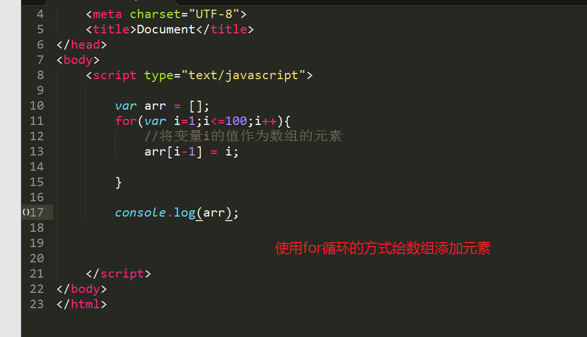

一、JavaScript简介
什么是JavaScript？
从交互的角度，提升用户的体验性！
JavaScript是由网景公司开发的一款基于浏览器、基于面向对象、事件驱动式的网页脚本语言。
基于浏览器：JavaScript它是被浏览器来进行解析的。HTML、CSS、JavaScript它们都是被浏览器来进行解析。
基于面向对象：在JavaScript中一切皆是对象，对象是由属性与方法来组成。
事件驱动式：用户的某些特定的行为，比如鼠标经过、鼠标离开、鼠标点击等等这些行为它会被JavaScript所捕获，JavaScript会给这些行为赋予一些功能代码。
JavaScript的应用场景
表单验证
一些网页特效， 比如全选功能、比如图片轮播………
开发一些网页的小游戏 ，比如贪吃蛇…… 别踩白块 HTML5+CSS3+JAVASCRIPT
与服务器进行交互， Ajax --谷歌于2005年推出的
JavaScript与Java的关系
JavaScript它是网景公司开发的 livescript
Java是Sun开发的 但是它现在被甲骨文给收购
快速入门
二、JavaScript的书写方式
嵌入式、外链式、行内式
嵌入式
将JavaScript代码嵌入到HTML文件的script标签中， 它是通过一对\<script>\</script>标签来嵌入的！
注意：如果H5的文档 type属性可以省略不写！
在HTML文档中 script标签可以出现多次
外链式
JS代码它可以单独的保存为一个以.js为扩展名的文件， 然后通过HTML中的\<script>\</script>的src属性将其引入到当前的HTML文件中！
思考一下：
因为嵌入式与外链式都是使用的script标签来实现JS代码，会不会产生冲突？
一对script标签 ，既写了JS代码的同时又引入了外部的JS文件
一对script标签 ，实现了嵌入式的同时还实现外链式？会不会产生冲突！
一对script标签一次只能实现一种书写方式
行内式
HTML标签中 有一些事件属性 。事件属性都是带有on前缀， 比如鼠标经过、鼠标离开、鼠标单击等等。
onclick
onmouseover
onmouseout
将JS代码书写在HTML标签的事件属性中
格式：
1 | <标签名 事件属性 = "JS代码" > |
关于嵌入式与外链式之间的区别：
使用嵌入式书写的JS代码它只能够被当前的HTML文件所使用
外部的JS文件可以被多个HTML文件所引入 (推荐使用)
三、注释
JS中的注释有两种方式：单行注释、多行注释
单行注释
格式：
1 | // 注释的内容 |
多行注释 或 块注释
格式：
1 | /* |
四、JS代码的语法规则
JavaScript严格区分大小写
JavaScript脚本程序须嵌入在HTML文件中
JavaScript脚本程序可以独立保存为一个外部文件， 这个文件是不能自己运行的它必须要依赖于HTML文件
JavaScript脚本程序中不能包含HTML标记代码
每条语句末尾可以加分号一定是英文下的分号(;)，最好加分号
一行写了多条JS语句 这个时候每一条语句就必须要加分号
五、三个常用的输出语句
document.write(“要输出的内容”)
作用：
它主要是用来向body标签中输出write()小括号里面的内容
document它表示是当前的HTML文档对象
write在英文中是”写”的意思
对象是由属性与方法组成的 。
对象.属性与对象.方法，从视觉上面来区分属性与方法， 属性不带小括号 ，方法带有小括号。write它是一个输出的方法
window.alert(“要输出的内容”)
作用：
它主要是用来向当前的浏览器窗口中弹出一个警告提示框
window它表示的是当前的浏览器窗口对象 window对象是js中最顶级的对象 ，可以省略不写
alert在英文是”警告”的意思
window对象与document对象之间的区别：
window对象它代表着当前的浏览器窗口对象
document对象它代表着当前的HTML文档对象
window对象包含document对象
站在window的角度来说document对象是window对象的一个属性
console.log(“要输出的内容”)
作用：
向浏览器的调试工具中的”console” 选项卡里面输出内容
console的英文意思是”控制台”
log是日志的意思
六、变量
什么是变量？
变量是一种可以变化的量，变量主要是用于存储数据的。我们命令JavaScript去干活的时候，往往需要产生一些数据，需要临时性存放起来，方便取用。我们也可以理解为，变量就像一个购物袋，我们可以用来装苹果、榴莲（当然也可以用来装玫瑰），变量是存放在内存中，内存是临时存储数据的。
硬盘：持久性存储
内存：临时性存储
声明变量(定义变量)
定义变量需要有一个关键字 variable 变量
1 | var 变量名; //声明变量 |
1 | var 变量名 = 值; //定义变量 |
变量名的命名规则
变量名可以是由大小写英文字母、下划线(_)、美元符号(\$)、数字来组合
变量名不能以数字开头， 变量名开头只能大小写英文字母或者是下划线或者是美元符号来开头
变量名不能使用JavaScript 关键字或者保留字作为变量名。
如果一个变量名是由多个单词组成的，那么建议使用驼峰法或者下划线连接法
驼峰法 ：从第二个单词开始 ，首字母要大写 ，getUserName
下划线连接法 ：每一个单词之间要使用下划线来进行连接。 get_user_name
希望大家在声明变量的时候变量名要做到见名知意。
给变量名赋值
将等于号右边的值赋值给等于号左边的变量名！
第一种方式：先声明变量然后再来赋值。
第二种方式：定义变量
修改变量的值
声明一个变量已经给其赋了值 ，然后再来修改这个变量的值！
格式：
1 | 变量名 = "新值"; //给变量名重新赋一个值 |

为什么要使用变量 ? 方便程序员对数据进行管理
七、变量的数据类型
为什么变量需要数据类型？
变量主要是用于存储数据的，现实生活中的数据有很多种
比如有数值、有字母等等 。那么为了将这些数据进行分门别类，所以就引出了变量的数据类型。
变量的数据类型分为： ==两大类==、==七小种==
==两大类==：基本数据类型(标量数据类型)、复合数据类型！
基本数据类型：只能存储一个值
复合数据类型：至少存储一个值，可以存储多个值
JavaScript是一种弱类型的语言。 在声明变量的时候不需要指定变量的数据类型。
强类型的语言，在声明变量的时候一定要先指明这个变量的数据类型是什么 ，并且值也是这个数据类型。
在JS中的变量声明的时候不需要去指定变量的数据类型，但是它也是有数据类型，它的数据类型是由其值来决定！
基本(标量)数据类型
String(字符串型)、Number(数值型)、Boolean(布尔型)、undefined(未定义型)、null(空型)
String(字符串型)
什么是字符串型数据类型？
变量的值加了引号的数据！我们就称之为字符串数据类型！ 引号：单引号和双引号都可以！不管引号里面是什么 只要是加了引号的数据都称之字符串数据。
在JavaScript中有一个内置的函数可以检测变量的数据类型typeof(要检测的变量名)
问：如果在双引号定义的变量中是否还能在出现双引号 ？
要解决上图所示的问题， 就需要使用转义字符！
问：如果在单引号中定义的变量里面是否还能出现单引号？
不能出现单引号，但是可以使用转义字符(\)对单引号进行转义。
一般在工作中：
如果是使用的是双引号定义的变量 ，那么里面就会使用单引号 ，双包单。
如果是使用的是单引号定义的变量 ，那么里面就会使用双引号， 单包双。
Number(数值型数据)
包含：整数与小数、NaN (Not a Number) 它不是一个数
整数：正整数、负整数、0
小数：正小数、负小数
Boolean(布尔型)
布尔型它主要是用来表示真与假!
布尔型数据只有两个值：
true(真)和false(假)
如何得到布尔型：
定义一个变量的值为true或者是false 就可以得到布尔型。
注意：
布尔型的值是小写的true和false
undefined(未定义型)
得到未定义的数据类型：
定义一个变量给其值赋值为 undefined
得到undefined关键字
声明变量， 然后直接打印或者使用这个变量， 这个时候就会得到 undefined。
null型
如何得到null型？
定义变量的值为null
您也许会问，为什么 typeof ，运算符对于 null 值会返回 “Object”。 这实际上是 JavaScript 最初实现中的一个错误，然后被 ECMAScript 沿用了。
复合数据类型
至少存储一个值，可以存储多个值。
Object(对象)、Array(数组)
八、运算符
什么是运算符
可以进行运算的符号 比如：+、-、*、/
运算符可以为分三种：
一目、二目、三目或 一元、二元、三元
一目：指的是运算符的操作数只有一个 比如：i++
二目：指的是运算符的操作数有两个 比如：a+b
三目：指的是运算符的操作数有三个 ? :
运算符分为：
算术运算符
赋值运算符
比较运算符
逻辑运算符
字符串连接运算符
三目运算符
算术运算符
| 符号 | 功能 |
|---|---|
| + | 加法 |
| - | 减法 |
| * | 乘法 |
| / | 除法 |
| % | 求余数(取模) |
| ++ | 自加1运算符 |
| – | 自减1运算符 |
++与--这两个运算符 一般称之为自操作运算符
++与--这两个运算符的规则是一样的。
++运算符它称之为自加1运算符
++运算符它分为前加加和后加加
前加加： ++符号在变量的前面， 比如：++a;
前加加的运算规则：==先自加1 然后再赋值==
后加加：++符号在变量的后面， 比如：a++;
后加加的运算规则：==先赋值然后再自加1==
--运算符它称之为自减1运算符
--运算符它分为前减减和后减减
前减减：--符号在变量的前面 ，比如：--a;
前减减的运算规则：==先自减1 然后再赋值==
后减减：--符号在变量的后面 ，比如：a--;
后减减的运算规则：==先赋值然后再自减1==
注意：
不管是前加加还是后加加自身都会自加1
不管是前减减还是后减减自身都会自减1
赋值运算符
=：将等号右边的值赋值给等号左边的变量
+=：将等号左边的变量的值加上等号右边的值然后将其结果赋值给等号左边的变量
-=：将等号左边的变量的值减去等号右边的值然后将其结果赋值给等号左边的变量
*=：将等号左边的变量的值乘以等号右边的值然后将其结果赋值给等号左边的变量
/=：将等号左边的变量的值除以等号右边的值然后将其结果赋值给等号左边的变量
%=：将等号左边的变量的值与等号右边的值进行求余运算然后将其结果赋值给等号左边的变量
我们在使用+= 这些符号的时候的注意事项
+= 这些符号的前面没有var关键字
+= 这些符号必须是紧密相连
字符串连接运算符
什么是字符串连接？
使用一定的符号将字符串进行拼接在一起。
因为+号它又是算术运算符，又是字符串连接运算符
什么时候它是执行加法运算 ，什么时候是执行字符串连接运算！
如果+号两边的变量的数据类型都是数值型的时候， 就会执行加法运算。
如果+号两边的有一个变量的数据类型都是字符串类型的时候， 就会执行字符串连接运算。
注意：
变量与字符串要使用+号进行连接
工作中：
“字符串”+变量名+”字符串” // 字符串拼接的方法
| 符号 | 功能 |
|---|---|
| + | 字符串连接 |
| += | 字符串连接 |
需求：使用字符串拼接的方式， 打印出某个人的个人简介， 要求使用无序列表的格式打印
比较运算符
使用比较运算符会得到boolean类型的值
| 符号 | 功能 |
|---|---|
| > | 大于 |
| < | 小于 |
| >= | 大于或者等于 |
| <= | 小于等于 |
| == | 等于 判断==两边的值是否相等 |
| != | 不等于 |
| === | 全等于 判断数据类型与值是否都相等 |
| !== | 不全等 |
注意：
比较运算符它最终得到的结果是布尔值：true和false
三目(三元运算符)
格式：
1 | 条件表达式 ？条件表达式1 ：条件表达式2; |
说明：
问号前面的位置是判断的条件，判断结果为boolean型，为true时调用表达式1，为false时调用表达式2。
其逻辑为：“如果为真执行第一个，否则执行第二个。”
逻辑运算符
| 符号 | 说明 | 功能 | ||||
|---|---|---|---|---|---|---|
| && | 逻辑与 并且 | &&符号两边的表达式的结果同时为真才为真 | ||||
| \ | \ | 逻辑或 或者 | \ | \ | 符号两边的表达式的结果只要有一边为真就为真 | |
| ! | 逻辑非 取反 | 取反操作 将true变为false 将false变为true |
九、运算符的优先级
为什么会出现运算符的优先级问题？
因为在一个表达式中有可以会出现多个运算符 ，这个时候就要考虑哪一个运算符要进行先运算
有括号就先算括号里面的内容，然后再乘除再加减
那么如何去提升运算符的优先级呢？
加()
十、变量数据类型转换
什么是数据类型的转换：
将一种数据类型转换为其它的数据类型！
在JS中变量数据类型的转换分成两种：自动转换、强制转换！
自动转换是系统自己完成的！我们看不到系统转换的过程！
代码在运行的过程中 ，它会根据上下文的环境进行变量的数据类型的自动转换！
自动转换与强制转换的结果是一样的！
强制转换
注意：强制转换是通过JavaScript中的三个系统函数来完成的。
函数：Number(变量名)
作用：将其它的数据类型强制的转换为数值型
在数值型数据中有一个特殊的数据叫NaN(Not a Number)这不是一个数 ，为什么会出现NaN呢？当将其它的变量的数据类型转换为Number的时候， 如果不能直接的转换过来， 就会变成NaN
注意

规则：
| 数据格式 | 转换后的结果 |
|---|---|
| “数字” | 数字 |
| 只要是在字符串中含有非数字的都会转换为NaN | NaN |
| “字符数字” | NaN |
| “字符” | NaN |
| “” 和“ ” 空字符串和有空格的字符串 | 0 |
| true | 1 |
| false | 0 |
| null | 0 |
| undefined | NaN |
函数：Boolean(变量名)
将其它的数据类型强制的转换为布尔型 (结果：true和false)
| 数据格式 | 转换后的结果 |
|---|---|
| null和undefined | false |
| 0和””和NaN | false |
| “0” | true |
| 1 | true |
| “ ” 有空格的字符串 | true |
| “有具体内容的” | true |
总结：
将number类型转换为boolean类型， 只有0与NaN是false ，其它的都是true
null与undefined 转换为boolean类型 是false
将String转换为boolean类型 ，只有空字符串是false ，其它的字符串都是true， 只要是这个字符串里面有内容 ，就是true
函数：String(变量名)
将其它的数据类型强制的转换为字符串型
转换规则是：在其它的数据类型的外面包裹一个引号
注意：
自动转换与强制转换的结果是一样的。
十、流程控制
什么是流程控制？
意指在程序运行时，个别的指令（或是陈述、子程序）求值的顺序。
流程控制分为三种结构：
顺序结构、选择(分支)结构、循环结构
顺序结构
代码从上至下 一行一行进行解析！
分支结构
虽然有多种选择，但是最终只会选择一个。
if语句和switch语句
==if语句分为三种分支==
单分支
语法：
1 | if(条件表达式){ |
结构说明：
当条件表达式成立时，才会执行代码块。
条件表达式成立指的是：得到布尔类型的值为true 就表示成立。
流程图：
输入对话框
在浏览器中弹出一个输入对话框
window.prompt(Message,defaultValue);
这个方法有两个参数，这两个参数可以写也可以不写
Message：表示提示信息
defaultValue：默认值
如果用户点击了确定按钮会得到一个字符串类型的数据！
如果用户点击了取消按钮会得到 null
双分支
语法：
1 | if(条件表达式){ |
结构说明：
如果条件表达式成立的话就执行代码块1，反之如果不成立就执行代码块2
流程图：
多分支
多分支也称之为多条件判断
语法：
1 | if(条件表达式1){ |
结构说明：
第一步：先去判断条件表达式1是否成立 ，如果成立就执行代码块1 ，然后就结束if语句 ，如果不成立
第二步：判断条件表达式2是否成立， 如果成立就执行代码块2， 然后就结束if语句， 如果不成立
第三步：判断条件表达式3是否成立 ，如果成立就执行代码块3 ，然后就结束if语句 ，如果不成立
第四步：判断条件表达式n是否成立 ，如果成立就会执行代码块n ，然后就结束if语句 ，如果不成立
第五步：前提是有写else语句 ，else语句可以省略不写， 上面的所有的条件表达式都不成立 ，就会执行else语句里面的代码块
流程图：
通过上面的代码我们看出有bug ，要求用户输入的必须是在0~100之间来控制，
涉及到if语句的嵌套 ，if语句里面是可以再来嵌套if语句
switch语句
语法：
1 | switch(变量名){ |
结构说明：
switch语句它是拿小括号中变量的值去与每一个case后面的值进行全等比较 ，如果比较成功(true) 就会执行对应的代码块 ，还要去查找是否有break关键字， 如果有break关键字 ，那么switch语句就会结束 。
但是如果没有break关键字 ，就会先执行下面的代码块， 然后再判断是否有break关键字 ，它要找到break关键字才会结束执行。
如果说变量的值与case中每一个值都不相等 ，那么它就会执行默认的代码块。
流程图：
关于if语句与switch之间的区别：
一般if语句用于范围之间的判断
switch语句一般用于固定值之间的判断
因为SWITCH能够实现的功能， 我们其实完全可以使用IF语句多分支来实现！
案例：输出今天星期几？
第一步：如何通过JS来获取到系统的时间
通过new Date()可以创建一个时间日期对象
第二步：从时间日期对象中获取一周中的某一天
通过时间日期对象.getDay()方法来获取一周中的某一天 。返回值：0~6之间的一个整数。 0表示星期天， 6表示星期6
1 |
|
循环结构
在满足一定的条件下， 重复执行某些代码！
for循环、while循环、do…while循环
for循环
语法：
1 | for(定义变量;条件语句;变量更新){ |
结构说明：
第一步：变量初始化 ，定义一个变量并给其赋值 ，它只会执行一次
第二步：判断条件表达式是否成立 ，如果成立就执行第三步， 如果不成立就会结束for循环
第三步：假设条件表达式成立， 执行循环体
第四步：对变量进行更新 ，变量更新完毕以后接下来就会重复第二步--第三步--第四步
一直到条件表达式不成立了 ，然后for循环才会结束
流程图：

例1：使用for循环来输出10个hello
例2：使用for循环来输出1到100之间的数。
例3：使用for循环来求1到100之间的和
例4：求某一个数的阶乘
例5：使用for循环来求1到100之间的偶数的和。
例6：恶心的游戏数字7
大家从小到大，都玩儿过的一个庸俗的游戏：
游戏玩儿法就是，大家轮流报数，如果报到能被7整除的数字，或者尾数是7的数字，都算踩地雷了。就应该罚唱歌。
请在控制台输出1~60之间的所有”安全数”。
比如：
1、2、3、4、5、6、8、9、10、11、12、13、15、16、18、19、20、22、23、24、25、26、29、30……
思路：
先应该得到1-60之间所有的数
i%7 != 0 表示不是7的倍数
i%10 !=7 表示个位数不为7
例7：使用for循环输出一个9行一列的表格
例8：使用for循环输出一个1行9列的表格
例9：使用for循环输出一个9行9列的表格
例10：使用for循环来实现99乘法表
while循环
语法：
1 | 定义变量 |
结构说明：
当条件表达式成立的时候就执行循环体，反之如果条件表达式不成立就结束while循环！
流程图：
使用while循环打印99乘法表
do...while循环
语法：
1 | do{ |
结构说明：
先执行一次循环体，然后再来判断条件表达式是否成立。如果条件表达式成立就继续执行循环体，如果不成立就会结束do while循环。
不管条件表达式是否成立，do while循环都会执行一次循环体。
流程图：
使用do while来求1-100之间数！
什么时候使用for循环什么时候使用while循环?
答： 不是绝对的
已知循环次数的时候多用for循环
未知循环次数的时候一般用while循环
while与do…while之间的区别
while循环是先判断条件表达式再来执行循环体
do…while先执行一次循环体， 再来判断条件表达式是否成立 。不管条件表达式成不成立， 它先会执行一次循环体 。
十一、循环提前的终止
典型的，当条件表达式不成立了，那么循环体就会终止执行。也可以称之为循环它寿终正寝了。
循环提前终止：本来条件表达式是成立了，循环体还可以继续的往下执行，但是我们可以使用一些关键字让其提前终止。
break和continue 循环终止的关键字 都需要配合 if语句来实现
主要的作用是==为了提升循环的效率== ！
break
终止，当在循环体中遇到了break关键字以后，整个循环语句就会直接结束。不会再执行。
continue
继续，它会终止当前循环体，那么继续执行下一次循环体。
十二、四个常用的系统函数
parseInt
语法：
1 | parseInt(变量名); |
作用：从一个变量中提取整数！
提取规则：如果变量第一个字符不是数字， 就会返回NaN ，它会遇到非数字就停止提取！
parseFloat
语法：
1 | parseFloat(变量名); |
作用：从一个字符串提取小数！
提取规则：如果字符串第一个字符不是数字 ，就会返回NaN ，它如果遇到除第一个.以外的非数字就会停止提取！
isNaN
1 | isNaN(变量名); |
如果是NaN就返回true ，如果不是的就是false。
作用：先将一个变量的数据类型自动的转换为Number ，如果是NaN就会得到true ；如果是一个数字的话就是得到false。
window.prompt
这个方法是属性window对象的方法
1 | window.prompt() |
这个方法是用来向浏览器中弹出一个用户输入对话框
第一个参数：text 表示提示信息
第二个参数：defautlText 表示输入框的中默认文本 默认值
但是注意：这两个参数都可以省略不写！
这个方法有两个按钮 ：确定按钮、取消按钮
当用户点击确定按钮时会得到一个String类型的数据
当用户点击取消按钮会得到一个关键字 null
十三、数组
什么是数组？
数组是一组数据有序的集合。数组它是属于复合数据类型。至少可以存储一个值。
为什么要使用数组？
因为在我们工作中， 有很多数据是有关联的。 我们要表示的时候想把这些数据用一个”东西”来存储，这个时候就可以用到数组！
数组的相关概念
数组元素
指数组中的每一个数据！我们就把它们称之为数组元素
数组下标(索引)
每一个数组元素都对应着一个数组下标， 数组的下标是从0开始， 第一个数组元素的下标是0，第二个数组元素的下标为1 ，第三个数组元素的下标为2 依此类推！
下标的主要作用就是为了方便找到数组中的元素！
如何访问数组里面的某一个元素
格式：
1 | 数组变量名[下标] |
数组长度
数组的长度：数组中元素的总个数
其实数组的变量名是一个数组对象
如何去计算数组的长度：
数组变量名.length
在JS中， 数组对象下面有一个length的属性， 这个属性可以得到数组的长度。
数组的长度与最大下标之间有什么关系 ？
最大下标=数组的长度-1
定义数组
使用[]来定义数组
第一种方式：先定义一个空数组 ，再往这个空数组中添加数组元素
第二种方式：在定义数组时候直接添加数组元素

使用new关键字和Array()方法来定义数组
第一种方式：创建一个空数组
第二种方式：创建一个数组 ，要指定数组的长度
第三种方式：创建一个数组 ，并指定数组元素
注意：
在工作中一般都是使用[]来创建数组， 基本上不会使用new关键字和Array方法来创建。
十四、多维数组
JavaScript它本身是没有多维数组的概念，因为在JavaScript中， 数组元素的数据类型可以是任意数据类型。假设在一个数组中有一些数组元素的的类型还是数组， 这个时候我们就将它称之为多维数组！
一维数组
简单来说，一个数组内所有的元素的数据类型的都不是数组类型，就是一维数组。
多维数组
超过一维都是可以叫多维，多维数组指的是一个数组中的元素又是一个数组。
如何访问二维数组的里面的数组元素呢？
格式：
1 | 数组变量名[一维数组的下标][二维数组的下标]; |
十五、数组的遍历
什么是数组的遍历？
操作数组中的每一个数组元素
使用for循环来遍历数组
因为数组的下标是连续的，数组的下标是从0开始。
我们也可以得到数组的长度。
格式：
1 | for(var i=0;i<数组的长度;i++){ |
注意：条件表达式的写法
i\<数组的长度
i\<=数组的长度-1
求数组中的最大值
使用for..in语句来遍历数组
for..in它本身是用来遍历对象的，因为数组也是属于对象的一种，那么也可以使用for..in语句来遍历数组
格式：
1 | for(var 变量名 in数组变量名){ |
注意：
一般情况下我们都会使用for循环来遍历数组，因为使用for循环遍历数组非常直观。
案例：使用数组的方式来实现输出今天星期几
遍历二维数组
十六、函数
什么是函数？
函数是可以被命名的，它是为了解决某些功能的代码段！
可以被命名：表示函数是可以有名字的，也是可以没有名字的。
代码段：函数体
为什么要使用函数？
为了解决代码的重用！
减少代码量。
函数的分类
系统内置函数和自定义函数
定义函数
1 | function 函数名([参数列表]){ |
结构说明：
function它是定义函数的关键字 不可以省略。
函数名它的命名规则与变量名是一样的
可以使用大小写英文字母、下划线(_)、美元符号(\$)、数字组成
不能使用数字开头
不能使用JS中的关键字和保留字作为函数名
如果函数是由多个单词组成的，那么可以使用下划线连接法和驼峰法
严格区分大小写
函数名后面紧跟着一对小括号 这一对小括号不能省略
小括号里面可能有参数，我们将其称之为形参
小括号后面紧跟着一对大括号 这一对大括号不能省略
大括号里面是函数体
注意：函数定义了一定要调用函数才能发挥其作用
调用函数
格式：
1 | 函数名([实参列表]) |
注意：在定义函数时如果有形参， 反过来说， 在调用的时候也要有实参 ，但是这个不是绝对的！
- 同名函数后面的会将前面的覆盖
- 函数一定是先定义后再调用
什么叫预解析：在JS中的变量与函数， 会将变量的声明与函数的声明， 提升到当前script标签的最前面！
函数的参数
函数的参数分为两种：
==形式参数==和==实际参数==
形式参数：在定义函数的时候的参数就称之为形式参数，简称”形参“
在定义函数的时候， 在函数名的后面的小括号里面给的变量名。
实际参数：在调用函数的时候的参数就称之为实际参数，简称”实参”

在一个函数中，参数的多少是根据功能来定义的！
使用函数来动态的输出M行N 列的表格
return关键字
一般在函数体里面不会有输出语句，只会有一个return关键字，将我们要输出的内容返回给函数的调用者。
return在英文中表示”返回”的意思
return关键字是在函数体里面使用。
它在函数体使用有两层含义：
- 当函数体里面遇到了return关键字以后，当前的这个函数就不会再往下进行执行了。
它会向函数的调用者返回数据 (返回值)
格式：
return 数据;
在调用函数时， 可以定义一个变量要接收到这个函数的返回值
注意：
我们在以后的工作中，函数体里面尽量不要有输出语句(document.write alert console.log )，尽量的使用return关键字将数据返回给函数的调用者。
特别强调：
在一个函数里面，return关键字可以有多个，但是return只会执行一次
return关键字它只能返回一个数据，如果需要返回多个数据，我们可以将多个数据使用数组的方式来保存，然后再将数组返回。

十七、匿名函数
什么是匿名函数？
没有名字的函数 称之为匿名函数！ 注意：匿名函数在JS中使用最多
匿名函数也是需要调用的
将匿名函数赋值给变量或者是事件
a) 将匿名函数赋值给变量，然后通过变量名加上小括号来调用匿名函数
b) 将匿名函数赋值给事件
将匿名函数赋值给事件 ，那么匿名函数什么时候才会执行？它要等到事件触发了以后， 匿名函数才会执行。
c) 匿名函数的自调用 ，匿名函数自己调用自己 ，在一些JavaScript框架中， jQuery 都是匿名函数自调用， 自己使用JS制作框架
十八、变量的作用域
什么是变量的作用域？
指变量在什么地方可以使用，什么地方不可以使用。
变量作用域的分类
变量作用域分为：全局作用域和局部作用域。
变量的作用域是通过函数来进行划分的。
在函数外面定义的变量我们将其称为全局变量，它的作用域是全局的。
全局作用域：变量在函数外面和函数里面都可以使用。
在函数里面定义的变量我们将其称为局部变量，它的作用域是局部的。
局部作用域：变量只能在该函数里面使用，在函数外面不可以使用。
问：是否能够提升局部变量的作用域呢？将局部变量的作用域提升至全局作用域。
在函数里面定义的变量也能够在函数外面访问到。
只需要将函数里面定义的变量的var关键字给去掉就可以实现将局部变量的作用域提升至全局作用域。
但是：并不建议直接就var 关键字给省略，我们建议在函数的外面定义一个同名的全局变量。
定义一个函数， 这个函数的主要功能就是返回三个数的和 这三个数要通过参数传递进去
十九、值传递与引用传递
传递--赋值 ，变量与变量之间的赋值操作， 就称为传递！
注意：
基本数据类型之间的赋值操作都是值传递，
复合数据类型之间的赋值操作都是引用传递。
值传递
将一个变量的值赋值给另外一个变量，如果修改其中一个变量的值，不会影响到另外一个变量的值！这两个变量之间是没有任何的联系。
引用传递
将一个变量的内存地址赋值给另外一个变量，如果修改其中一个变量的值，会影响到另外一个变量的值，这两个变量之间是有联系的。
变量名变量值之间的关系！
变量名引用变量值 ，变量值被变量名所引用！
变量如何在内存中存储！
内存它是分区域：栈区和堆区
栈区：空间小，速度快。 主要存储变量名以及值在堆区的地址
堆区：空间大，速度慢。 主要存储变量的值
二十、对象
什么是对象？
对象是由属性与方法组成。在JavaScript中一切皆是对象！
对象中的属性 ：其实就是我们之前学习的变量
对象中的方法 ：其实就是我们之前学习的函数
对象的分类
==自定义对象==和==内置对象==
如何创建自定义对象
1）使用new关键字和Object()方法来创建自定义对象
//this 在英文中表示这个 那个的意思 。没有具体的指向， 它要根据当前的语言环境来指。
//表示当前对象 this关键字一般用于方法中 ，它来表示当前对象 ，哪个对象调用当前的方法， this关键字就表示哪个对象。
2）使用{}来创建自定义对象
格式：
1 | var 变量名 = { |
内置对象分类
String对象：提供了处理字符串的属性与方法。
Array对象：提供了一些操作数组的属性与方法
Math对象：提供了一些操作数学方面属性与方法
Date对象：提供了一些对时间日期操作的方法
Number对象：它主要是提供了一个操作数值的方法
Events对象：提供对JavaScript事件的处理信息。
String对象
如何创建String对象
1) 定义的字符串变量名其实就是一个字符串对象。隐式创建
2) 使用new关键字和String()方法来创建。 显示创建
String对象的属性
| 属性名 | 功能 |
|---|---|
| StringObject.length | 得到字符串对象的长度 注意：这里的长度指的字符的个数！ |
String对象的方法
| 方法名 | 功能 |
|---|---|
| StringObject.substr(startIndex,[length]) 参数说明： startIndex：开始下标 length：可缺省的 表示的是要截取的长度 | 截取字符串 从startIndex(开始下标)处开始截取 如果length (长度)没有书写 表示一直截取到字符串的末尾 如果有写则表示截取的长度 |
| StringObject.split(sep) 参数说明： sep：指定的分隔符 | 使用指定的分隔符将一个字符串分隔为一个数组 |
| StringObject.substring(startIndex,[stop]) 参数说明： startIndex：开始下标 stop：可缺省的 表示的是要结束的下标 | 截取字符串 从startIndex(开始下标)处开始截取 如果stop(长度)没有书写 表示一直截取到字符串的末尾 如果有写则表示截取到结束下标的前一个位置 |
| StringObject.lastIndexOf(substr) | 查找substr这个字符串或者是字符在StringObject这个对象中最次出现的位置 如果找的到就返回其下标 反之如果没有就返回-1 如果查找的是多个字符 如果找的到就返回第一个字符的下标 |
| StringObject.indexOf(substr) | 查找substr这个字符串或者是字符在StringObject这个对象中首次出现的位置 如果找的到就返回其下标 反之如果没有就返回-1 如果查找的是多个字符 如果找的到就返回第一个字符的下标 |
| StringObject.charAt(index) | 返回一个指定下标的字符！ 参数说明： index：指定的下标值！ |
要访问指定下标的字符有两种方式：
StringObject.charAt(指定的下标)
StringObject[指定的下标] 建议使用
案例：判断用户名中是否有特殊的符号
1 |
|
StringObject.substr方法如下图：
StringObject.substring
获取文件的扩展名
StringObject.split()
- 获取文件的扩展名， 使用split方法来获取
| 方法名 | 功能 |
|---|---|
| StringObject.replace(reg,str) 参数说明： reg：规定了要替换的模式的 RegExp 对象 str：被替换的内容 |
使用str参数里面的内容替换reg的第一次匹配或所有匹配之后得到的内容 |
下图所示：只替换了一个hello
下图所示：替换所有的hello
Array对象
如何创建Array对象
1) 使用[]来创建
2) 使用new关键字和Array()方法来创建
Array对象的属性
| 属性名 | 功能 |
|---|---|
| ArrayObject.length | 返回数组的长度 数组元素的个数 |
Array对象的方法
| 方法名 | 功能 |
|---|---|
| ArrayObject.push(数组元素1,数组元素2….) | 向数组的末尾添加一个或者多个数组元素 并将新的长度返回 |
| 方法名 | 功能 |
|---|---|
| ArrayObject.pop() | 删除并返回数组的最后一个元素 |
| 方法名 | 功能 |
|---|---|
| ArrayObject.join([sep]) 参数说明： sep：表示连接的符号 可缺省的 如果这个参数没有写 则默认使用英文下面的逗号进行连接，如果有写就使用指定的连接符号来进行连接 |
将数组里面的元素合并为一个字符串 |
ArrayObject.concat(array1,array2......)
ArrayObject.unshift向数组的开头添加一个或者是多个数组元素ArrayObject.shift删除数组中第一个元素
Date对象
如何创建Date对象
1) 使用new关键字和Date()方法来创建， 带参数 ，获取指定的时间日期对象
2) 使用new关键字和Date()方法来创建 ，不带参数 ，获取系统当前的时间日期对象
Date对象的方法
| 方法名 | 功能 |
|---|---|
| DateObject.getFullYear() | 获取4位数的年份 |
| DateObject.getMonth() | 获取月份 返回值 0~11 0表示1月 11表示12月 |
| DateObject.getDate() | 返回一个月中的某一天 返回值：1~31 |
| DateObject.getHours() | 小时 返回值0~23 |
| DateObject. getMinutes() | 获取分钟 返回值：0~59 |
| DateObject.getSeconds() | 获取秒数 返回值：0~59 |
| DateObject.getMilliseconds() | 获取毫秒 返回值：0~999 |
| DateObject.getDay() | 获取一周中的某一天 返回值：0~6 |
| DateObject.getTime() | 获取时间戳 返回从1970年1月1日 一直到现在的毫秒数！ |
| DateObject. toLocaleString() | 根据本地时间把 Date 对象转换为字符串，并返回结果。 |
1 |
|
Math对象
注意：Math对象不需要创建， 直接使用即可！
Math关键字就是对象名
Math对象的属性
| 属性名 | 功能 |
|---|---|
| Math.PI | 求圆周率 |
Math对象的方法
| 方法名 | 功能 |
|---|---|
| Math.abs(x) | 返回x的绝对值 |
| 方法名 | 功能 |
|---|---|
| Math.ceil(x) | 对x进行向上取整 得到一个比当前数要大的最小整数 |
| Math.floor(x) | 对x进行向下取整 得到一个比当前数要小的最大整数 |
| 方法名 | 功能 |
|---|---|
| Math. round(x) | 对x进行四舍五入 |
| 方法名 | 功能 |
|---|---|
| Math. random() | 返回0~1之间的随机数 但是包含0不包含1 [0,1) |
想要得到10~20之间的随机数 或者是20~30之间的随机数 或者是40~50之间的随机数！
如何通过上面的方法可以得到我们想要的指定区间的随机数！
| 原始值 | 0 | 0.1 | 0.2 | 0.3 | 0.4 | 0.5 | 0.6 | 0.7 | 0.8 | 0.9 | |
|---|---|---|---|---|---|---|---|---|---|---|---|
| 10~20 | *10+10 | 10 | 11 | 12 | 13 | 14 | 15 | 16 | 17 | 18 | 19 |
| 20~30 | *10+20 | 20 | 21 | 22 | 23 | 24 | 25 | 26 | 27 | 28 | 29 |
公式 Math.floor(Math.random()*(最大值-最小值)+最小值) 包含最小值不包含最大值
公式 Math.floor(Math.random()*(最大值-最小值+1)+最小值) 包含最小值包含最大值
Nubmer对象
Nubmer对象的方法：
toFixed(n)
将一个数字进行保留n位小数， 需要进行四舍五入
二十一、BOM对象
JavaScript=ECMAScript+BOM+DOM
什么是BOM对象？
Browser Object Model 浏览器对象模型
BOM对象的作用
BOM对象它主要为了访问和操作浏览器各个组件提供了一系列的属性与方法！
BOM的结构图
- window对象 它是JavaScript中最顶级的对象，它代表着当前的整个浏览器窗口对象， 其它的对象都是以属性的方式添加在window对象下面！
- 比如：document这个对象它就是window对象下面的一个属性，但是它同时也是一个对象。document它相对于window对象来说它就是一个属性 。如果document它相对于write方法来说它就是一个对象
- DOM对象 文档对象模型。 它是用来操作当前的HTML文档 提供了一些属性与方法。
- document对象 它代表当前的文档对象
- history对象 历史对象 。它主要是用来记录浏览器的访问历史记录！注意：只有访问过后才会有历史记录。
- location对象 地址栏对象 。它可以用来获取到当前浏览器上面的地址栏中相关数据。
- navigator对象 浏览器对象 。它可以获取到浏览器的相关数据。比如浏览器的名称、版本等等
- screen对象 屏幕对象。 它可以获取到与屏幕相关的数据。比如：屏幕的分辨率
BOM对象分类
window对象
window对象的属性
| 属性 | 功能 |
|---|---|
| window.innerWidth | 获取浏览器内部的宽度(不包含浏览器的左右两边边框) |
| window.innerHeight | 获取浏览器内部的高度(不包含浏览器的菜单栏和地址栏以及上下的边框) |
| window.outerWidth | 获取整个浏览器的宽度 |
| window.outerHeight | 获取整个浏览器的高度 |
window对象的方法
| 方法 | 功能 |
|---|---|
| window.alert() | 向浏览器窗口中弹出一个警告提示框 |
| window.prompt() | 向浏览器窗口中弹出一个用户输入对话框 |
| window.confirm(str) | 向浏览器窗口中弹出一个用户确认框 如果点击了确定按钮会返回一个true 如果点击了取消按钮会返回一个false |
| 方法名 | 功能 |
|---|---|
| window.close() | 关闭当前浏览器窗口 |
| 方法名 | 功能 |
|---|---|
| window.open(url,name,options) 参数说明： url：要打开窗口的地址 name：窗口的名称 options: 选项，如下图所示 |
在浏览器中打开一个新窗口 ， 这个方法有一个返回值， 它的返回值是代表当前打开的这个窗口对象。 这个返回值它主要是用来给close()这个方法来使用。 |
注意：
close()这个方法它并不只有window对象才可以调用， 它还可以使用open()方法的返回值来调用
谁调用close()方法它就表示将哪一个窗口给关闭
如果是window对象来调用close()方法 ，就表示关闭当前浏览器的窗口
如果是open()方法的返回值来调用close()方法， 就表示关闭open()方法打开的窗口
延时器
| 方法名 | 功能 |
|---|---|
| window.setTimeout(code,MilliSec) 参数说明： code：要执行的代码，代码可以是一个函数 MilliSec：时间， 毫秒 |
当指定的时间MilliSec到了以后就执行一次code只会执行一次code |
需要：
想实现3秒以后， 才会在浏览器中弹出一个hello
案例1：鼠标点击一个按钮 然后5秒以后 ，才会当前的浏览器关闭！
案例2：要实现3秒以后 ，将图片隐藏
案例3：要求实现每隔3秒钟在浏览器中弹出一个hello
| 方法名 | 功能 |
|---|---|
| window.clearTimeout(timer) 参数说明： timer：要清除的延时器的返回值 |
清除指定的延时器 |
定时器
| 方法名 | 功能 |
|---|---|
| window.setInterval (code,MilliSec) 参数说明： code：要执行的代码 ，代码可以是一个函数 MilliSec：时间，毫秒 |
每隔指定的时间就执行code ，无限次执行code |
案例：使用setInterval来实现动态时钟
| 方法名 | 功能 |
|---|---|
| window.clearInterval (timer) 参数说明： timer：要清除定时器的返回值 |
清除指定的定时器 |
注意：
什么时候情况下要用到延时器，什么情况下需要用到定时器？
只需要执行一次的我们就使用延时器
无限次执行的功能我们就定时器
screen对象
| 属性名 | 功能 |
|---|---|
| screen.width | 获取屏幕的宽度 |
| screen.height | 获取屏幕的高度 |

navigator对象
| 属性名 | 功能 |
|---|---|
| navigator.appName | 获取到浏览器的名称 |
| navigator.appVersion | 获取到浏览器的版本 |
Location对象
这个对象可以获取到地址栏的相关信息
URL：统一资源定位符
location对象的属性
| 属性名 | 功能 |
|---|---|
| Location.href 重定向 | 设置或者获取到浏览器地址栏中的URL地址 |
location对象的方法
| 属性名 | 功能 |
|---|---|
| location.reload() | 刷新当前浏览器 |
history对象
注意：只有访问过后才会有历史对象
history对象的方法
| 方法名 | 功能 |
|---|---|
| history.back() | 加载上一个URL页面 后退 |
| history.forward() | 加载下一个URL页面 前进 |
| history.go(n) | 加载history列表中的某个具体的页面 |
history.go(1) -------> history.forward()
history.go(-1) -------> history.back()
二十二、DOM对象
JS它是一门事件驱动式的语言
什么是DOM对象
Document Object Model 文档对象模型
DOM对象作用
DOM它主要是为了操作HTML文档提供了一些属性与方法 ！
JS它主要是HTML文件进行增删改查
PHP它主要是对数据库进行增删改查
DOM操作：
我们要通过JavaScript来操作HTML标签 ，先要找到这个HTML标签对象
我们操作的标签对象， 这个标签里面拥有的属性 ，那么这个标签对象也会同时拥有
DOM对象的属性与方法
DOM的属性
凡是在JS中遇到”集合”两字 它就等价于数组 ，它的访问方式与数组一样 ，需要通过下标来访问。
| 属性名 | 功能 |
|---|---|
| innerHTML | 获取或者设置双边标签里面的内容 |
| document.body | 获取到body标签对象 |
| document.documentElement | 获取到根元素 html标签 |
| document.forms | 获取到所有表单元素 返回是一个集合 |
| document.images | 获取到所有的图片元素 返回是一个集合 |
innerHTML
document.body与document.documentElement
document.images
document.forms
DOM的方法
| 方法名 | 功能 |
|---|---|
| document.getElementById(“id的属性值”) | 通过id的属性值来获取元素 ，它只能获取到一个元素 |
| document.getElementsByTagName(“标签名”) | 通过标签名来获取元素 ， 它返回是一个数组集合 。 如果要访问其中的某一个标签对象， 要使用下标来进行访问！ 就算这个数组里面的元素只有一个， 那么也是要使用数组下标的方式来进行访问！ |
| 祖先对象.getElementsByTagName(“标签名”) | 后代元素选择器 |
| document.getElementsByName(“name的属性值”) | 通过标签的name属性值来获取元素， 它返回是一个数组 。 如果要访问其中的某一个标签对象 ，要使用下标来进行访问！ 就算这个数组里面的元素只有一个 ，那么也是要使用数组下标的方式来进行访问！ name属性选择器 |
document.getElementById(“id的属性值”) ID选择器
document.getElementsByTagName(“标签名”)
祖先对象.getElementsByTagName(“标签名”) 相当于CSS的后代元素选择器
先获取到祖先对象，然后再通过这个祖先对象获取其指定的后代元素(标签名)
document.getElementsByName(“name的属性值”) Name属性选择器
在HTML中每一个标签都会有一个NAME属性， 上面的这个方法是表示通过HTML的标签的name属性值来获取元素 ，得到是 数组， 多用于表单
DOM对象操作HTML标签的属性
DOM对象对HTML标签的属性操作 htmlDOM
1 | <标签名 属性="值" > |
增删改查
增、改
要操作的标签对象.属性名
要操作的标签对象.setAttribute(“属性名”,值)
增加
要操作的标签对象.属性名
要操作的标签对象.setAttribute(“属性名”,属性值)
修改
查询
获取到对应的属性的值 ，就称之查询！
语法：
要操作的标签对象.属性名
要操作的标签对象.getAttribute(“属性名”)
删除
语法：
要操作的标签对象.removeAttribute(“要移除属性名”)
语法：
要操作的标签对象.className
要操作的标签对象.setAttribute(‘class’,值)
特别说明：
我们使用标签对象.属性名这种方式， 就要将class这个关键字改为className ，如果使用要操作的标签对象.setAttribute()这个方法来设置class属性时， 直接写class就可以了！
DOM对象对style属性操作
它主要是用来操作标签的style的属性 =操作行内样式
1 | <标签名 style="CSS样式" > |
注意：JavaScript它只能操作标签的行内样式！
设置或者修改：
语法
1 | 要操作的标签对象.style.css属性 = "值" |
点击一个按钮将下面的div进行显示或者隐藏
注意：
如果CSS属性中有中划线要去掉 ，并且将中划线后面的单词首字母大写 驼峰法
background-color ==== backgroundColor
二十三、事件
什么是事件？
比如当鼠标单击、当鼠标滑过、当鼠标离开 这些行为被称之为事件
什么是事件驱动式？
js是一门事件驱动式的脚本语言！
当事件发生时， 会被JS捕获到 ，然后赋予其一些功能代码！
事件的绑定方式
事件的绑定方式有二种：行内绑定与动态绑定
1) 行内绑定事件
说明：所谓的行内绑定事件 是将事件写在HTML标签里面
格式：
\<标签名 事件名=”函数名()” />
2) 动态绑定事件
说明：是将事件名写在JS代码里面
格式：
通过JS获取标签对象.事件名 = 事件的处理程序， 事件的处理程序一般是一个匿名函数。
事件列表
- onclick 当鼠标单击时
- ondblclick 当鼠标双击时
onload 当页面加载完成后
指body标签里面所有的标签都加载完成以后再来执行js代码。 onload事件要和window对象来绑定， onload还可以写在body标签里面
onmouseover 当鼠标经过时， 当鼠标悬停
onmouseout 当鼠标离开时
onsubmit 当表单提交时
它主要是用来实现表单验证！这个事件要绑定给form标签上面
onsubmit事件它主要是用来阻止表单的默认行为。
表单它本身就会具有提交的功能。如果表单数据不合法就将让表单不提交，如果合法就让其提交。onsubmit事件阻止表单提交分为行内绑定与动态绑定方式
动态绑定
在表单处理程序
return false 表示不允许表单提交
return true 表示允许表单提交行内绑定时
return false 表示不允许表单提交return true 表示允许表单提交
onfocus 当获取焦点时
onblur 当失去焦点时
- onchange事件， 当内容发生改变时 ，一般多用于select标签
表单验证案例
1 |
|
全选、反选、取消 案例
document.getElementsByName()这个方法多用于复选框中。 一组复选框的name属性值是一样的 ，主要是用来实现全选、反选、取消功能。
1 |
|